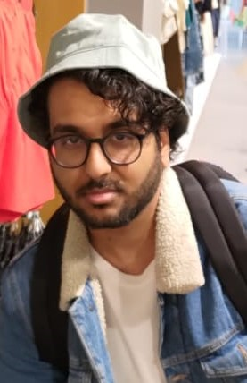

This is me
I did not buy the hat in this picture
The Basics
My name is Zain, 26y/o, born and raised in The Hague.
Due to the large number of international students living there, I'm often confused as one myself, but I am in fact a local from the notorious Schilderswijk.
I completed my secondary education at Gymnasium Haganum, specializing in STEM, with little to no genuine interest in the exact sciences.
As such I chose to flip the script and pursue a bachelor's degree in Japanese studies, which I finished right here at Leiden University earlier this year, though truthfully, I've lost interest in Japan since covid.
Academics aside, from the age of sixteen onward, I have been spending most of my mental effort into writing poetry and prose, honing my artistry through incessant practice and research, both personal and through the literary courses at Leiden.
So simply put, the reason I've chosen the MA Book and Digital Media Studies is to brute force my way into the publishing world as an insider who is both author and agent.
I'm not fussy about showing my work, feel free to ask me if you're interested.
Favorite Authors and specific works
Languages I Speak/Comprehend
| Prior Knowledge | No experience with markup languages, traumatized by C# |
| Expectations | Preferably not having to deal with C# |